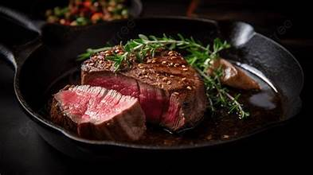

language for creating web pages and web applications.
등심(-心)은 소의 등뼈에 붙은, 기름기가 많고 연한 고기이다.[1] 소 도체에서는 마지막흉추와 제1요추 사이를 직선으로 절단하고 배최장근의 바깥쪽 선단 5 cm 이내에서 평행으로 절개하여 갈비 부위와 분리한 후, 흉추와 경추를 발골하고 제 7경추와 제1흉추 사이에서 배선과 수직으로 절단하여 생산하되 견갑골 바깥쪽의 광배근은 제외시키며, 과다한 지방 덩어리를 제거하여 정형한다.